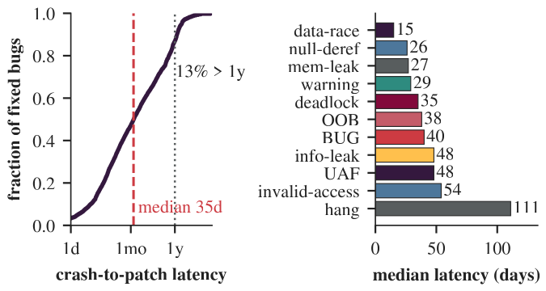
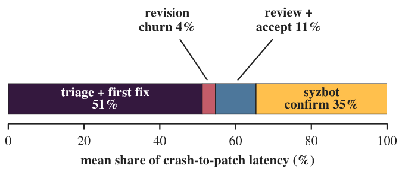

Pervasive concurrency
Data races, deadlocks, and concurrent-free UAFs belong to an interleaving, not an input. Most user-space APR and fuzzing assume sequential behavior.
IEEE Symposium on Security and Privacy (S&P) 2027 · SoK
1University of Illinois Chicago · 2Indiana University Bloomington
Automated kernel bug discovery has advanced rapidly. Continuous fuzzing and static analysis systems, such as syzbot, now expose Linux kernel bugs at a scale that downstream processes struggle to absorb. Yet a crash report is only the beginning. Before a bug is eliminated, it must be triaged, understood, patched, validated, reviewed, integrated, and often backported. These later stages remain far less automated, creating a persistent gap between bug discovery and patch deployment.
This SoK systematizes the Linux kernel bug lifecycle from discovery to deployment. We organize prior work and production systems into five stages: discovery, triage, patch generation, patch validation, and integration. We explain the resulting automation gradient through kernel-specific challenges such as concurrency, implicit invariants, cross-syscall state, hardware dependence, lack of fault isolation, and architecture/configuration multiplicity. We further ground the analysis in a measurement of real syzbot-fixed bugs. The data shows that the crash-to-patch gap is not merely a backlog of unfixed reports but a structural failure mode of the repair pipeline: even after being fixed, bugs often remain open for weeks, require review-driven patch revisions, or lack reproducers that current repair and validation systems assume. These findings expose a deeper mismatch: today's repair and validation techniques often assume reliable reproducers, localized root causes, and checkable correctness oracles, yet these are precisely the artifacts missing from many real kernel bug reports. Closing the crash-to-patch gap, therefore, requires treating such artifacts as outputs to be produced, not prerequisites to be assumed.
Five stages, from a fuzzer crash to a fix in every affected tree. Automation is mature at the front and thins to manual work at the back: the automation gradient.
A0 production-deployed · A1 offline/prototype · H human-in-the-loop · M manual. Revisions and re-backports loop S5 back to S3.
| Stage | Consumes → Produces | Dominant method | Auto. | Oracle (“done”) | Productive LLM role | Chal. |
|---|---|---|---|---|---|---|
| S1 Discovery | source/binary → crash + report | coverage-guided search, static analysis | A0 | strong: crash / sanitizer trips | generator: specs, checkers | C1, C3, C4 |
| S2 Triage | crash + report → root cause, severity, dedup | symbolic exec., static, learning | A1 | partial: exploit primitive, dup match | judge: severity labels | C3, C5 |
| S3 Generation | root cause → candidate patch | templates, transforms, LLM agents | A1/H | weak: a single reproducer | agent: propose patch | C2, C6 |
| S4 Validation | patch → correct/complete verdict | directed fuzzing, static, PoC | H | weak/none: no spec for completeness | judge: correctness (unverified) | C2, C5 |
| S5 Integration | patch → merged + backported fix | human review, social process | M | social: maintainer acceptance | generator: review comments | C6 |
Six cross-cutting properties of the OS kernel shape every stage. They weigh far more heavily on the later stages than on discovery, which helps explain the automation gradient.
Data races, deadlocks, and concurrent-free UAFs belong to an interleaving, not an input. Most user-space APR and fuzzing assume sequential behavior.
Lock ordering, refcount balance, RCU grace periods, no sleeping in atomic context: no test suite encodes them, so generate-and-validate has no specification.
Kernel objects persist across system calls. Triggering a bug needs a precise sequence, and the symptom can sit far from the faulty instruction.
Drivers are most of the kernel and depend on devices, MMIO, DMA, interrupts, and firmware that many test environments lack.
No process boundary contains a fault. A benign-looking WARNING can hide an arbitrary write, and a faulty patch can leave the system unbootable.
One source builds for many architectures and thousands of configs, and ships through mainline plus stable and vendor trees. Fixes must hold, and be backported, across all of them.
6,946 Linux kernel bugs that syzbot reports as fixed, each linked through its full lifecycle: crash timestamps, reproducers, the reconstructed patch series (v1 → v2 → …), reviewer threads from lore.kernel.org, and the merged commit.


Strongest automation per (bug class × technical stage). The empty lower-right is the crash-to-patch gap, drawn at the technique level.
| Bug class | # fixed | Discovery | Triage | Generation | Validation |
|---|
● dedicated kernel technique ◐ generic only ○ none
Thirteen LLM patch-generation configurations on 80 evolution-stage syzbot crashes (bugs whose first upstream fix was itself revised). Each candidate is scored for localization and, by two semantic judge models with author re-judging of disagreements, for repair.
| Method | Localization % | Localization set | Repair (of 80) | ||||
|---|---|---|---|---|---|---|---|
| any | file | func | struct | macro | Fixed | Partial | |
The classification from the paper's appendix (Tables 6 and 7): every discovery system with its type, target, bug class, and technique families, and representative systems for triage, generation, validation, and integration with their automation level.
| System | Stage | Classification | Venue | Year |
|---|---|---|---|---|
| Loading… | ||||
Discovery type: F = fuzzing, S = static, H = hybrid, E = empirical study. ★ = LLM-based. (U) = user-space contrast.
Everything behind the paper's figures and statistics is public.
The syzbot-fixed bugs with crash reports, reproducers, patch revisions, reviewer threads, and merged commits. Hosted on Hugging Face.
The scraper that builds the dataset from syzbot, lore.kernel.org, and kernel git, plus the analyzers behind the measurement section.
Stage, type, target, bug class, technique family, and automation level of the surveyed systems, as CSV and JSON.
The judge rubric, per-candidate verdicts, and rationales for the 80-crash patch-generation benchmark.
Ethics: all data comes from public sources on bugs syzbot had already marked fixed. No unfixed vulnerability, proof of concept, or exploit is included, and no LLM-generated patch was sent to kernel maintainers.
@inproceedings{bai2027sok,
title = {{SoK}: From Finding to Deployment: Systematizing the {OS} Kernel Bug Lifecycle},
author = {Bai, Luyao and She, Gengda and Alghythee, Kenan and Zhang, Hang and Wang, Xiaoguang},
booktitle = {Proceedings of the IEEE Symposium on Security and Privacy (S\&P)},
year = {2027}
}
This work is supported in part by US NSF grants 2127491 and 2154199, and a Google Cloud gift award.